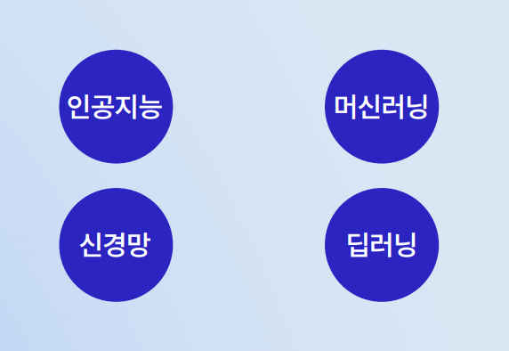
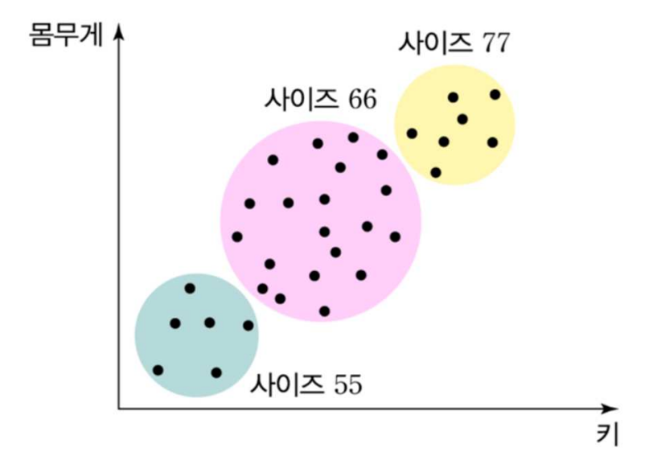
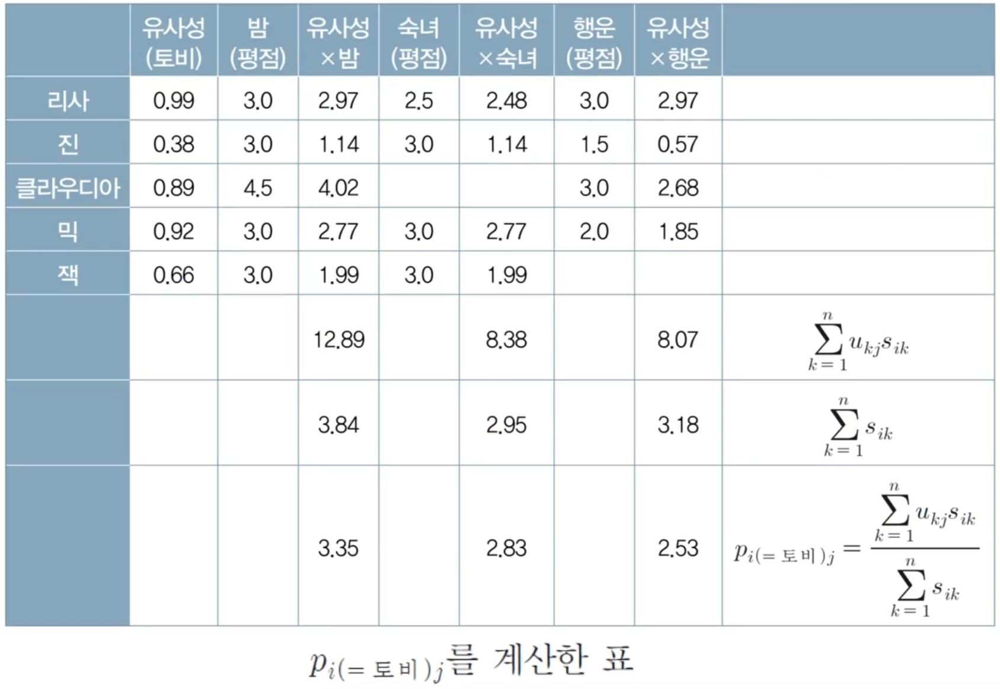

포함 관계: AI ⊃ ML ⊃ NN ⊃ DL.
| 접근법 | 도구 |
|---|---|
| 연결주의 | TensorFlow, Keras (딥러닝) |
| 기호주의 | Scikit-learn (분류·회귀·군집화·KNN) |

| 구분 | 정답 | 대표 알고리즘 |
|---|---|---|
| 지도학습(Supervised) | 있다 ("선생님 고맙습니다") | 회귀(Regression), 분류(Classification) |
| 비지도학습(Unsupervised) | 없다 ("선생님 어디 계세요?") | 군집화(Clustering) |
| 방법 | 설명 |
|---|---|
| 최소자승법(Least Squares) | 전통 방법. 미적분으로 m, b 직접 계산 |
| 신경망(NN) | 데이터만 주면 오류역전파(Backpropagation)로 자동 학습 |
정상 메일은 햄(Ham)이라 부름. 이미지 분류는 CNN(7주차) 등장으로 가능해짐.
갓 태어난 아기도 "얼음"이라는 말을 몰라도 흰 덩어리를 한 묶음으로 인식 → 군집화는 분류보다 더 낮은 수준의 인지.
군집화 후 덩어리에 이름 붙이기 = 레이블링(Labeling). 교수님 강조: "라벨링 X, 레이블링 O".
작동 순서:
처음에 모든 데이터를 각자 한 덩어리로 시작 → 가까운 것끼리 묶어가며 K 줄여나감.
| 관점 | 설명 |
|---|---|
| 사용자 기반(User-based) | 너랑 취향이 비슷한 사람이 본 영화 → 너도 봐라 |
| 아이템 기반(Item-based) | 이 책을 산 사람이 이 영화도 보더라 |
데이터 두 종류:

| 방법 | 특징 |
|---|---|
| 유클리드 거리(Euclidean) | 절대값이 중요할 때 |
| 상관계수(Correlation R) | 경향성/패턴이 중요할 때 |
| 코사인 거리(Cosine) | 벡터 각도 |
| 맨해튼 거리(Manhattan) | 축 평행 거리 |
| 항목 | 핵심 |
|---|---|
| 머신러닝(ML) | 데이터로부터 학습·일반화하는 알고리즘 시스템 |
| 포함 관계 | AI ⊃ ML ⊃ NN ⊃ DL |
| 도구 | 연결주의=Keras, 기호주의=Scikit-learn |
| 지도학습 | 회귀 + 분류 (정답 있음) |
| 비지도학습 | 군집화 (정답 없음) |
| 회귀 | 관계식 찾기. Y=mx+b. 최소자승법/역전파 |
| 분류 | 어디에 속하는지. 스팸 필터=베이즈 정리. 정상 메일=햄 |
| 군집화 | 덩어리 묶기. 가장 기본적 인지 |
| k-Means | K개 중심→가까운 데이터→무게중심 이동→반복. K값 결정 한계 |
| 레이블링 | 덩어리에 이름 붙이기 (라벨링 X) |
| 추천 시스템 | 사용자 기반 + 아이템 기반 |
| 협업 필터링 | 유사성 측정이 시작이자 끝. 유클리드/상관계수 |
| 추천 점수 | Σ(유사성×평점) / Σ유사성 |
| 집단지능 | 9주차 페이지랭크와 같은 맥락 |
강의 영상 마지막에 등장하는 빈칸 채우기 — 핑크 단어가 정답입니다.
데이터에 내포된, 숨어서 보이지 않지만, 의미 있는 지식을 찾기 위해 데이터를 뒤지고 분석하는 것이 ( 데이터마이닝 )이다.
대상을 관련 있는 것들의 덩어리로 묶는 게 ( 군집화 )다. 분류와 짝을 이루면서 분류보다 더 근본적인 작업이다. 분류를 못 할 수 있는 갓난아이도 이것을 할 수 있다는 뜻이다.
영화든 책이든 상품에 대한 선호도 데이터로부터 사람들 사이의 유사성 혹은 상품들 사이의 유사성을 추출하는 방법이 ( 협업 필터링 ) 알고리즘이다.